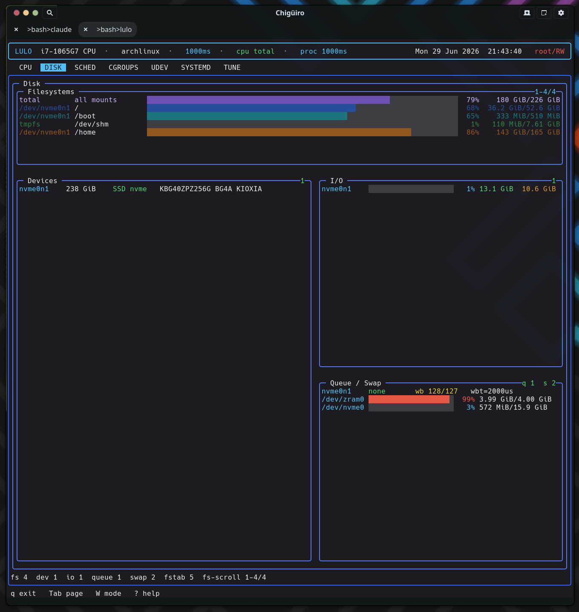

The DISK page is the one heavy page with no daemon behind it: it gathers everything synchronously in-process from /proc, /sys/block, and the mount tables, then lays it out as a responsive multi-panel dashboard covering filesystems, block devices, live I/O, and queue tunables.
DISK is a read-only storage dashboard. Unlike the cgroups, systemd, udev, and tune pages – which each talk to lulod over a socket – the disk page calls one synchronous gather (lulo_dizk_snapshot_gather) directly on the frontend thread and renders the result into a set of stacked panels.
| Panel | Source | What it shows |
|---|---|---|
| Filesystems | getmntent + statvfs |
Mounted filesystem usage with an aggregate total row |
| Devices | /sys/block |
Block devices: size, rotational, model, transport |
| I/O | /proc/diskstats + /proc/uptime |
Per-device utilization and read/write bytes |
| Queue & Swap | /sys/block/*/queue/*, /proc/swaps |
Scheduler, read-ahead, request depth, swap usage |
Every field is parsed from a kernel-provided file or pseudo-file; there is no df, lsblk, or iostat subprocess. The whole snapshot is a flat struct of fixed-size arrays, so the gather does no heap allocation.
The gather is selective about what it shows so the dashboard stays meaningful:
getmntent over /etc/mtab (falling back to /proc/mounts), with a blocklist of pseudo/virtual filesystem types and a dedup by device. tmpfs is kept only for /tmp and /dev/shm. Usage is total − f_bfree×f_frsize from statvfs./sys/block, reading size, queue/rotational, and device/model; transport (nvme / sata / mmc / virtio) is inferred from the device name. Loop, ram, dm, and zram devices are skipped./proc/diskstats against /proc/uptime, deriving utilization as io_ms / uptime_ms × 100; partitions are filtered out so only whole devices show./sys/block/*/queue/* – the active scheduler (the bracketed [mq-deadline] token), read_ahead_kb, nr_requests, max_sectors_kb, write_cache, and wbt_lat_usec, plus NVMe power_state and NUMA node./proc/swaps, and fstab is read with getmntent over /etc/fstab, resolving UUID= / LABEL= / PARTLABEL= entries through the /dev/disk/by-* symlink trees.The renderer (build_disk_widget_layout) is a responsive splitter rather than a fixed grid. The Filesystems panel is always on top; the Devices, I/O, and Queue & Swap panels arrange side by side when the terminal is at least 96 columns wide and stack vertically below that, with per-breakpoint reserved heights and clamped sizing.

The Filesystems panel leads with a synthetic total / “all mounts” row that sums used and total bytes across every mount and draws an aggregate usage meter. That row uses its own dedicated purple/lavender color so it reads as a summary, not as one of the component mounts.
Each per-filesystem row gets a stable color keyed to its index, not its usage: the row index is cycled through a fixed palette permutation into the theme’s fill slots, so adjacent filesystems always get distinct hues and a given mount keeps the same color across frames regardless of how full it is. This is a deliberate choice – the color encodes identity (which mount), while the bar length and percentage encode capacity.
| Panel | Columns / content |
|---|---|
| Devices | Device name, size, rotational/SSD, transport, model |
| I/O | Utilization% bar, read bytes, write bytes (from diskstats deltas) |
| Queue & Swap | I/O scheduler, read-ahead, nr_requests, plus swap usage meters |
I/O utilization and swap meters are threshold-colored (graded at 25 / 50 / 75 / 90%), so a saturated device or near-full swap is visible at a glance.
Every other heavy page caches its data in lulod and serves it to the TUI over a socket, because gathering it (a full systemd unit inventory, a deep cgroup walk) is expensive and must stay off the UI thread. Disk data is cheap – a handful of small /proc and /sys reads plus statvfs per mount – so it is gathered inline whenever the page renders or a refresh is requested. There is no TTL cache and no IPC: the snapshot is simply rebuilt each time. This keeps the disk page self-contained and is the reason it is structurally the simplest page in the app.
/sys/block/*/queue tunables as bundles